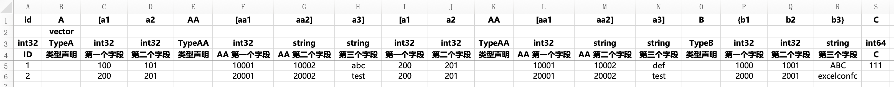
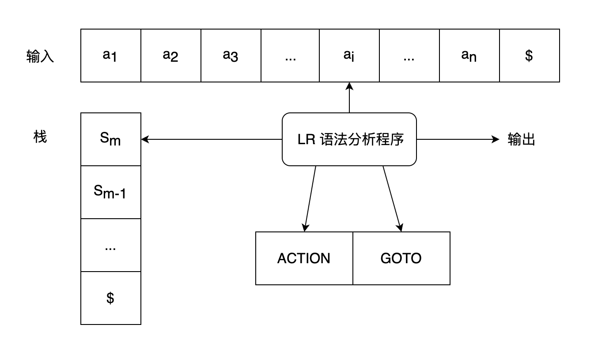

在日常生产实践过程中，经常有将 Excel 等表格文件中填充的数据导出成为可供程序加载的一定结构化的数据配置文件的场景。比如，作为游戏开发者，需要将游戏策划配置的数值导出成可供运行程序加载的配置文件，此时需要的文件格式更可能是 JSON、XML 等格式，而非 Excel 文件本身的 .xlsx 格式；再比如，作为服务器开发人员，面对云上部署的资源，我希望将这些资源部署的数据统一配置在 Excel 文件中，再通过导表工具导出到 Yaml 配置文件中，从而让 K8s 这样的容器编排工具将资源更新部署。
对于这样的需求场景，往往可能配置规则是固定的，比如在表格中指定某一列作为数组元素、某几列作为结构体元素、某几列作为结构体线性表元素。当业务需求场景灵活多样时，可能需要的规则就会变得更加丰富，如何准确地识别这样的配置规则、将表格数据按照规则导出成目标格式数据文件，就是一个导表工具需要完成的工作。为了更好地定义这样的规则，特别是对于那些结构之间彼此嵌套、引用的场景，一种成熟且高效的方式就是使用编译原理来实现这样的解析工作。
编译与文法
宏观来讲，将符号序列按照某种规则，导出成目标数据的过程，都是编译。使用 Hexo 这样的工具将 Markdown 文件渲染成 HTML 页面的过程是编译，使用 Helm 对 Yaml 文件渲染生成供 K8s 集群直接使用的资源配置文件也是编译，甚至将自然语言从中文翻译为英文，我们都可以认为这是一个“编译”的过程。那么对于输入是 Excel 文件，输出是目标格式数据的过程，这自然也是一种编译的过程。而且，这种解析的规则，往往更可能是和编程语言的语法类似，那么自然而然地就可以用解析一门编程语言的方式，来解析 Excel 配置中的配置数据，继而将这些数据“编译”成为目标的格式。
用于实现这种编译过程的工具，就是编译器。一般而言，编译器分为前端和后端两部分工作，前端工作包括对符号序列的识别、对识别后的 Token 序列进行语法解析、在语法解析过程中穿插着语义分析，从而解析输出一棵抽象语法树（Abstract Syntax Tree，AST）或目标中间代码，至此，前端工作结束。接下来，编译器的后端来对生成的这些中间代码进一步优化、链接、导出成为可供运行环境执行的可执行文件。常见的 C、C++ 等编程语言，往往都是通过这样的方式来对源码进行编译，从而生成目标可执行文件。现代编译技术使得这个过程极大规范化，而且对于编译技术本身，也出现越来越多的工具来支持定制化开发，比如当时的 Lex 和 Yacc 就是实现了词法分析和语法分析的解析工具（Yacc 还可以穿插语义动作代码，因而也可以说实现了一定的语义分析）；LLVM 工程作为积极活跃的编译基建项目，也提供了强大丰富的编译器后端代码优化、链接等功能的支持。目前一款主流的 C 语言族编译器—— Clang 就是通过 LLVM 来进行编译器后端支持的。这些，都是对于编译原理应用及现状的一个简单概括，我们所需的功能很简单，几乎用不到这些强大的功能，但这样的背后的原理，确实一致的。
规范来讲，编译原理对于一门语言的定义，是指通过某种文法所能生成的所有的句子（字符串）的集合，就叫做这种文法对应的语言。因此如果想要实现一种编程语言，那么对于这种语言的文法定义，就是必要的。常见的编程语言而言，其文法都是上下文无关文法，这种文法的特征就是在有限的上下文内，能够按照一定的规则对句子进行推导或规约，从而判断句子是否符合我们的文法，从而断定这个句子是否是这门语言中一句符合语法的语句。
文法解析
回到问题本身而言，我们的配置文件可能是这个样子（例 1）：

此处来解释一下这样的配置代表什么：
第一行表示导出的结构体中的字段名称，其中可能穿插着一些语法符号起到结构化标识的作用，比如 [、]、{ 以及 }。其余的标识符，就代表了结构体中相应字段的名称。第二行的内容，实际上是第三行内容的补充，可以将第二行的内容视为类型的修饰符，比如字段类型是 string 时，修饰符标记为 D 表示将该字段视为一个时间字符串（D 表示 DateTime）；将字段修饰为 E 时，表示该字段实际上是一个枚举值字段（E 表示 enum）。类似地，K 表示该字段作为 Key 索引，以此等等。这个规则实际上是可以自行定义，并在解析过程中进行逻辑补充，从而满足相应场景需求。
对于一个结构体定义，只需要首先定义这个结构体值作为字段时的名字，其次，将其类型声明为希望的结构体类型名。然后使用 { 和 } 来界定这个新的结构体，在新的结构体中按照一样的规则继续定义字段。对于结构体 vector 来说，vector 本身表示是一个不定长数组，即数组的长度，实际上由包含的元素个数来决定。此时只需要定义这个数组字段的名称，类型处填充其持有对象的类型名，后接 [ 和 ] 来界定单个结构体元素结构，此时定义和上述对于单个结构体字段的定义类似。
因此例 1 的结构实际上就是最顶层结构体包含 id、A、B 和 C 四个字段；其中 A 本身是一个结构体数组，这个数组中的每个结构体元素包含 a1、a2、AA 和 a3 四个字段；其中 AA 又是一个结构体数组，其每个结构体元素包含 aa1 和 aa2 两个字段。字段 B 本身就是一个结构体元素，其包含 b1、b2 和 b3 三个字段。用 Protobuf 来描述其结构，就是
1 | message TypeAA { |
在明确了这样的配置规则后，从规则约束本身出发，我们可以进一步归纳出这个导表工具对应的文法。所谓文法，就是一条条的推导规则，形如 A -> a B，就表示 A 可以推导出符号 a 和 B，如果还存在一条推导规则 B -> b，那么就表示 A -> a B -> a b，即 A 最终推导出 a b 这个句子。一个文法正是由这样的一条条推导规则定义出来的，其中 A 和 B 就称为非终结符，因为它们可以进一步推导出其他符号；而 a 和 b 就称为终结符，因为没有任何的推导规则是由它们来进一步推导产生的。简而言之，对于所有的推导规则，推导符号左侧的，就是非终结符，右侧的，就是终结符。
为了强化对于文法的理解，举一个简单的例子，对于文法：
1 | A -> a A |
而言，其能够生成的句子包括 a、aa、aaa、…。即至少一个 a，这也就对应正则表达式 a+。
而稍微改造这个文法：
1 | A -> a A |
其中 ε 表示空串，即什么都不产生。那么此时这个文法能够生成的句子就包括 ""、a、aa、aaa、…。即零或多个 a，对应正则表达式 a*。
由此可见，使用文法可以描述诸多生成句子的规则，可以很简单强大地描述其生成的句子的规则。在一些场景下，正则表达式也能达到类似的效果，但依然有一些场景，正则表达式无法实现这样的需求。比如文法：
1 | A -> ( A ) |
此时文法能够生成的句子包括 ""、()、(())、…。即所有左括号和对应右括号匹配的句子（每个左括号均唯一存在一个右括号与其匹配，但这个语法生成的句子均以若干个左括号起始）。此时这个文法就无法使用正则表达式来描述这样的句式规则。
对于文法的表达有了一定的理解后，我们尝试归纳一下这个导表工具对应的文法，综合其表达能力后，可以得到这样的解析文法：
1 | START -> FIELDS |
观察文法可以看到，实际上拓展了一种对基础类型的不定长数组的支持，即允许通过 int [] [] [] 这样的形式来定义声明一个 int 类型的不定长数组。
文法解析技术概论
在确定了一种文法后，该如何对于给定的符号序列，也就是终结符序列，该如何判断这个终结符序列是否是此文法生成的合法序列呢？此时就提及到了编译原理中的几种文法分析技术。总地来说，我们对于一个符号串序列，存在两种方式来对其进行分析，一种是尝试按照文法来进行推导、一种是在字符串序列的基础上，尝试不断规约成文法中的非终结符。对于前者而言，如果从起始符号，一直推导出了这个句子，那么就可以断定这个句子是符合这个文法的，因为确实存在规则来推导出此句子；而对于后者而言，如果最终能将句子不断规约到起始符号，那么同理也能断定此句子符合此文法。这也就笼统地可以将文法分析技术分为“推导”和“规约”两种模式。当然，细心的人可能会发现，如果一个句子能够被文法推导出，往往可能还不够，因为这样的推导规则往往可能有多种。如果通过多种推导方式都能得到同样的句子，那么就说明这样的文法本身是具有二义性的文法，此时的推导过程对我们而言往往可能没有很大的价值，因为我们需要的实际上就是唯一确定的一种规则，能确保句子的生成。
编译原理中，对于“推导”模式，提出了 LL(1) 文法。其中，第一个 L 表示从左向右扫描输入，第二个 L 表示产生最左推导，1 表示在每一步中只需要向前看一个输入符号来决定语法分析动作。
对于“规约”模式，提出了 LR 文法，第一个 L 同样表示从左向右扫描输入，第二个 R 则表示产生最右推导，即从句子本身出发，不断尝试最右推导得到规约式，再进一步尝试最右推导。最右推导在编译原理中，也被称为规范推导。
如果一种文法能够通过上述的方法来解析，那么就称这种文法就是该解析方式的文法。因此常常表述成 LL(1) 文法分析、某种文法是 LL(1) 文法等等。
对于 LR 文法而言，几种常见的分析方式包括 SLR(1)——简单 LR 分析、LR(1) 和 LALR(1)。这部分涉及的定义细节较多，感兴趣的话可以参考《编译原理》相关书籍，均会对几种文法有详细的解释说明。笔者也从书籍算法出发，实现了对于几种文法的解析判断支持的工具：GrammarParser。此工具可以报告给定文法是否符合指定文法分析，同时可以给出成功分析后的分析动作表，通过这个分析动作表，就能确定扫描过程中遇到某些特定字符时，执行的语法分析动作。这个动作表本质上用于驱动一个有限状态自动机实现状态跳转，面对输入字符串的内容来查表，进而确定分析动作。此工具还可以将状态图导出为 csv 表格、或 dot 文件用于状态图绘制，同时也支持导出为 Go 源码，便于跨语言的工具实现。
导表工具的语法分析
对于上述的导表工具文法而言，其本身是 SLR(1) 的，而对于 LR 分析的能力强弱而言，如果能够通过 SLR 进行语法分析，往往也能通过 LALR 和 LR(1) 来进行语法分析。因为后面两种较 SLR 而言分析能力更强，至于其背后原因，也可以参考相关资料。最终，在结合分析能力（分析动作时判断依赖的终结符数量尽可能少）和分析效率（状态数尽可能少）之后，采用了 LALR 的分析方式来对文法进行分析，得到了对应的动作表。为了方便导表工具的快速构建，采用 Go 语言来编写，因而将文法对应的动作分析表导出到 Go 源码，可参考文件 excelconfc.mini.gp.go。
在导表工具工程中，实现对应的 LR 分析逻辑，如果仅需要根据动作表分析判断给定符号序列是否能够被接受，此分析过程仅需要一个状态栈即可，用于保存面对输入符号时的状态的转移。而当我们希望通过语法分析的过程穿插着一些语义动作，进而通过语义动作的逻辑来构建中间代码（比如构建一棵抽象语法树），就需要一个额外的结点栈来保存分析过程中结点间的信息及传递。可参考导表工具 excelconfc 的 LR 语法分析器逻辑代码：lr.go。其中 func (p *LRParser) Analyze(input []Lex) error 只是单纯的判断符号序列是否可以被接受，因此内部仅有符号栈 stateStack；而 func (p *LRParser) BuildAST(input []ASTNode, onReduce ReduceCallback) (ASTNode, error) 用于判断符号序列是否可以被接受的同时，还执行了语义分析，因此内部包括一个额外的 nodeStack 结点栈。

语义分析构建抽象语法树
在对输入序列进行语法分析时穿插的语义动作，都是发生在对结点栈的栈顶结点执行 LR 文法的规约动作时。可想而知，只有在确定栈顶结点执行哪一种规约动作时，我们才确定这段序列是如何按照我们给定的文法来进行分析的。举个例子，当按照规则 BDT -> int 进行分析时，我们可以确定此时识别出了一个 int 字段，将其规约成了一个基础数据类型，类似地，当按照规则 STRUCT -> ADT { FIELDS } 进行分析时，我们可以确定此时识别出了一个结构体的定义。在确定了具体的分析动作时，我们可以为相应的动作添加语义动作的逻辑代码。针对此时的逻辑代码，可以参考代码：excelconfc.go。这里给出一段说明：
1 | case 14: // VEC -> ADT VEC_ADT_ITEMS |
其中 nodeStack 表示分析时的结点栈，当某几个符号结点被分析成功后，按照识别顺序压入这个结点栈内。按照标号 14 的推导规则而言，ADT 和 VEC_ADT_ITEMS 这两个结点就是此时位于栈顶的两个元素。stackTop 实际上是栈的元素个数，因此 stackTop-1 位置的就是 VEC_ADT_ITEMS 结点、stackTop-2 位置的就是 ADT 结点。当执行这样的规约动作时，创建新的名为 lex.MID_NODE_VEC 的结点（实际上是用于区分结点而增加的中间节点命名），为这个结点设置它的名字是 ADT 结点的名字、设置它的类型也是 ADT 结点的类型。由于规约到这一步时，所有的结构体元素均已经被规约到 VEC_ADT_ITEMS 结点，因而遍历 VEC_ADT_ITEMS 的子结点就是这些结构体元素。这里将它们统一设置结构体类型是 ADT 标识的类型，同时设置它们的元素名称为 {ADT.name}[idx] 的形式。
至于此处提到的子结点，实际上是为了通过语义分析来构建一棵抽象语法树（AST），因为在得到这样的语法分析树以后，如果需要对这个结构进行格式化数据输出，所有的语法结构实际上就是这棵树的层序结构。而且，遍历这棵树的复杂度实际上只是 O(N) 的，这与我们按序扫描每一列的复杂度是一致的，而这也是生成数据的必然须要的复杂度！
在通过对每一条推导规则补充语义分析动作逻辑后，我们就可以在语法分析过程中完成语义分析。当这些输入列满足文法规则时，语法分析成功，同时可以得到一棵抽象语法树；不满足文法规则时，语法分析失败，反馈给用户分析失败的报错信息。通过这样的文法分析后，对于例 1 的输入内容，按照先根顺序打印得到的语法分析树：
1 | Node@FIELDS name: type:NestFieldsTestConf colIdx:0 group:11 |
至此，我们所需的必要的结构信息、结点原始信息（字段名、字段类型、所在列等信息）均以一种很好的方式保存下来，进而便于后续的数据分析与输出！对于其中形如 Node@FIELDS 这样的结点，是语法分析过程中的一些中间结点，由于它们本身并不是实际的终结符号，只是作为一种中间结点的方式保存到这棵树中，所以它们的一些原始信息是默认值（比如 colIdx）。也可以看到上述分析的对于结构体数组的规约的语义分析动作逻辑，体现在语法树中就是相应的结点 A[0] 和 A[1]，都是通过规约时的语义动作来填充相关结点值的。
-
推导与规约
-
LL1, SLR, LR1, LALR